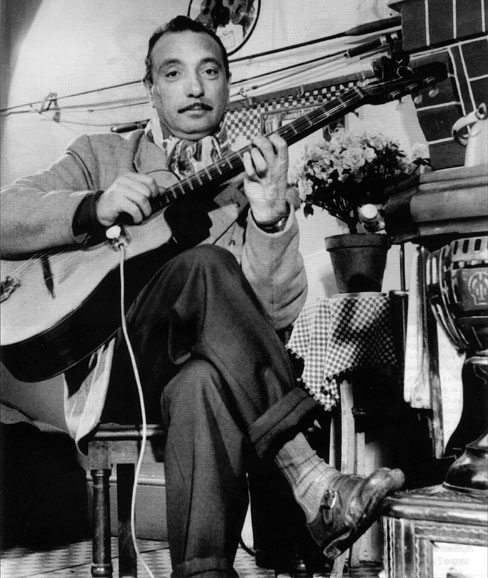
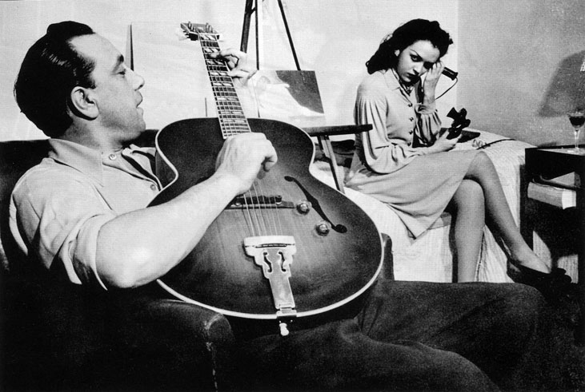
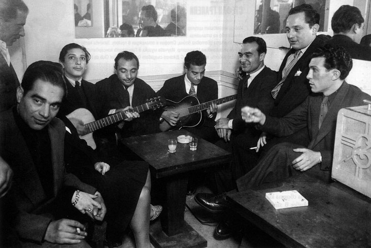
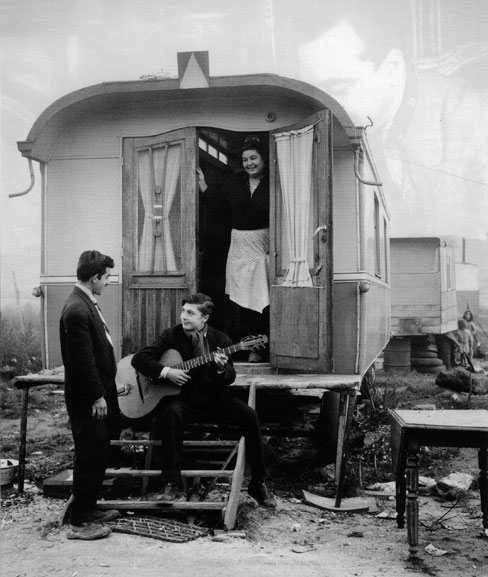
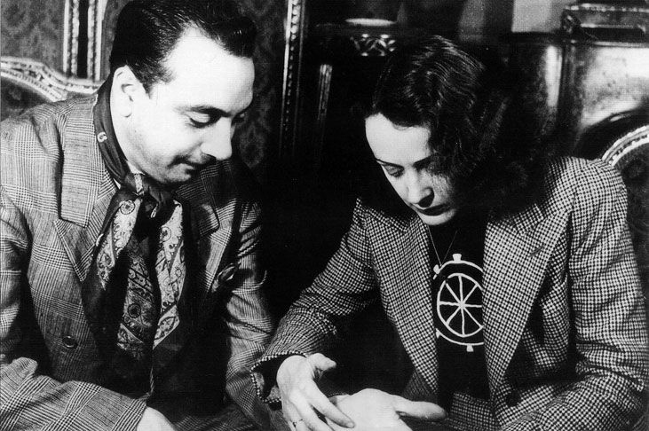

Райнхарт. Твърде мистериозен странстващ музикант, Който остава номад в сърцето на градското общество. Чарлз Делауни, дългогодишен приятел и мениджър на Джанго, казва: „Въплъщаваше две личности. Едната беше съвсем примитивна. Той никога не е ходил на училище. Не понасяше и нормално легло. Имаше потребност да живее в циганска каравана край реката, където да лови риба с голи ръце. Но Джанго имаше благородство, независимо че можеше да е много зъл с музикантите, които работят за него."
Роден е под открито небе в ромски катун на 50 км южно от Брюксел. Кръщелното му име е Жан-Батист. Джанго е ромското му име, означава Аз сьбуждам. Родителите му са музиканти и циркови артисти. Майка му изкарва прехраната си, като танцува пред караваната. А караваната, в която живеят, е по-малка от 10 квадратни метра, теглена от един кон, отрязана в задната част, за да побира пианото на баща му. Именно около циганския огън Джанго се научава да свири на цигулка от баща си, репетирайки ромски мелодии, чути по време на странстванията им. Таткото обаче ги напуска, когато Джанго е на 5. Пътуват много между Белгия, Франция и Северна Африка. След осмата си годишнина Джанго и майка му се заселват в предградията на Париж. Първия си инструмент - полубанджо, полукитара, получава, когато е на 12 години, от съсед, забелязал интереса му към музиката. Самоукият талант бързо му проправя път към парижката клубна сцена. На 14 е нает да свири шансони в танцувална зала за работническата класа на Париж. С навършване на пълнолетието си Джанго е звезда. Поканен е на първото си турне из Европа от виден английски продуцент.
Трагедията в живота на Джанго Райнхарт се случва, когато е на 18. Живее с жена си Белла в каравана край френската столица и свири в нощните клубове. На 2 ноември 1928 се връща късно у дома. Караваната е пълна с хартиени цветя, които жена му прави, за да продава. Украсите неволно попадат в пламъка на свещ, която Джанго държи. Двамата със съпругата му едва се спасяват от пожара. Джанго е жив, но променен завинаги. Принуден е да се възстановява 18 месеца на легло, лекарите искат да ампутират крака му. Джанго отказва, но основното му притеснение е друго. „Мисля само за ръката си" - споделя той с майка си. В крайна сметка до ампутация не се стига, но безименният и малкият пръст на лявата ръка на музиканта са непоправимо обгорели и закърнели. Никой не мисли, че Джанго ще свири на струнен инструмент отново. По-малкият му брат му донася китара. Той използва 18-те месеца, за да се научи да свири с деформираната си ръка.

В чест на Джанго Райнхарт всяка година се провежда международен фестивал на циганския джаз в Ню Йорк
Всъщност геният на Джанго проблясва след пожара. Райнхарт разработва нов метод на свирене. Използва само показалеца и средния си пръст на водещата си ръка. „Двата пръста" - така се казва една от десетките книги за талантливия джаз трубадур. „Джанго е един от малкото неповторими в нашата музика. Поканих го да свири с мен само за да му се насладя повече" - казва самият Дюк Елингтън. Музиката на Райнхарт е смесицата от ред и безредие. Той обръща мелодиите с главата надолу и ги декорира богато. Самият Джанго споделя, че е привлечен от стремеж към съвършенство и точност както в класическата музика, така и в джаза. Джазът се оказва идеалната среда между класическите музикални канони и семплата популярна музика. До ден днешен последователите на Джанго са смесица от изпълнители с бърз, хаотичен стил и такива, които слушат записите на кумира си на бавни обороти отново и отново, за да чуят всяка нота. Джанго Райнхарт е религиозно отдаден на импровизацията, рядко повтаря соло изпълнение. Показателна е срещата му с Андрес Сеговия, маестрото на испанската класическа китара. Случва се на официална вечеря. Джанго закъснява с три часа, появява се без китара, но се държи така сякаш нищо не се е случило. Сеговия преотстъпва на Джанго своята китара. Испанецът остава поразен от таланта на Раинхарт, но когато го помолва да му запише нотите на композицията, която чува, Джанго се разсмива. „Току-що я измислих" - свива рамене дяволито. Джанго не е приказлив. Майчиният му език е ромски, говори френски и малко италиански, но предпочита да се изразява чрез музиката си. „Пред папа или пред президент – не ме е страх с китара в ръка" - Казва Джанго.

Джанго Райнхарт свири в Париж, 1948
Така и не се научава да разчита и да пише ноти - наследството му на музикант и композитор зависи единствено от коректността на колегите му. Американските джаз класици са голямо вдъхновение за Джанго. Една история разказва как веднъж, години преди да замине за Америка на турне, Джанго се опитал да избяга в Новия свят. По пътя от Париж обаче се загубил и се върнал след два дни. Когато чува Армстронг за първи път, е омаян. Получава мигновено прозрение. Приятел му пуска запис на Indian Cradle Song на Големия Луи. Джанго прималява, хваща се за главата и промълвява на ромски: „Братооо!", в пълен унес. Това е моментът, в който Джанго започва да свири джаз и не спира до смъртта си. КОГАТО ЕДНА ДЖАЗ КИТАРА СРЕЩНЕ ЕДНА ДЖАЗ ЦИГУЛКА През 1931 Джанго Раинхарт се запознава с цигуларя Стефан Грапели. Грапели разказва как свирел в бар в Монпарнас. По това време да изпълняваш джаз на цигулка било новост, налагало се да обяснява, че изпълненията му не са фалшиви. Една вечер в бара влизат група нетипични посетители. Музикантът мисли, че са гангстери или, пази Боже, гангстери, които не харесват музиката му. Взират се в него до неудобство, спомня си Грапели. Едва по-късно той разпознава най-високия от тях като един китарист от улиците на Париж - Джанго. Когато към края на вечерта Джанго се обръща към Грапели, думите му са на най-особения възможен френски, плахи и срамежливи. Помолва го да посвири джаз. Две години по-кьсно двамата отново се срещат като изпълнители в група за следобедни танци в хотел Карнеги. По време на репетициите Стефан къса струна и отива зад кулисите да настрои цигулката си. Докато Стефан Грапели си нагажда струните, Джанго го чува и се заиграва с китарата си под звуците на цигулката. Така се ражда Quintette du Hot Club de France. Към него се присъединяват още две класически китари и контрабас. Един от китаристите в Quintette du Hot Club de France

Джанго със сина си Бабик и Баро Фере с брат си Саран Фере. Париж, 1945
е братът на Джанго - Джоузеф. Според някои истории квинтетът е замислен като квартет. Един ден обаче Джанго споделя с Грапели, че не може, когато цигуларят свири, да го подкрепят двама китаристи, а когато Джанго прави соло, да има само един китарист зад себе си. Тази история е малко проявление на горделивостта на Джанго, черта, която тепърва ще става забележима. Липсата на пиано и духови инструменти отличават Quintette du Hot Club de France от типичните за времето бендове, но Джанго е влюбен в звука на струнните инструменти и не му трябват други. Първия си албум Quintette du Hot Club de France записва безплатно, но бързо след това струнната трупа се превръща в хит. Работата с Джанго е трудна. Духът на музиканта остава, меко казано, болен. От време на време просто изчезва с караваната си и прекарва седмици в цигански катун. Залага и харчи огромни суми. Във всяко ново жилище бързо се появяват роднини от ромски произход. Понякога краде или проси храна и пиене. Изобщо не се впечатлява от срокове, граници, банкови сметки. Понякога закъснява за концерти или изобщо не идва. Друг път обаче е готов да свири за един човек, ако той може да го оцени. Никога не знае времето, ръководи се от слънцето. „къде си, чакаме те часове" - често го упрекват другите музиканти. „О, не знам" - е де-журният отговор. „Той свири, когато получи вдъхновение" - казва Майкъл Дрегни, негов биограф. Когато по време на турне из Великобритания се получава съобщение за всеобща мобилизация, защото започва войната, Джанго така се паникьосва, че изчезва, забравяйки за групата, за багажа и дори за своята китара. Джанго не обича да живее в затворени пространства. Нощем в хотелите на Монмартър оставя водата в банята да тече сякаш е сред природата. Не обича изкуствената светлина, предпочита да запали фенер. Стефан Грапели разказва хумористични случки за поведението на Джанго сред висшето общество. Когато се налага да облече вечерен костюм за първи път, Джанго смело слага аленочервени чорапи. Какво толкова, черното и червеното си отиват! Друг път на официална вечеря с краля на Белгия китаристът започва да яде салатата си с пръсти, но пък го прави с финес и стил сякаш е най-нормалното нещо на земята. „Джанго прекалява" - казва Грапели. Но музиката е на първо място. А когато свири, Джанго никога не греши. Той не репетира, а импровизира. „Има два вида грешки - обяснява Грапели. - Поради лошо здравословно състояние или поради лош вкус." Джанго допуска първата може би веднъж годишно, но никога втората. Грапели го сравнява с Паганини. Феномен. Още при първия си опит със запис на плоча той

Джоузеф Райнхарт, брат на Джанго, и неговият син Жан-Жак в циганска каравана в покрайнините на Париж, 1957
надминава очакванията на продуцентите си. През 1934 възможностите на звукозаписната техника са ограничени. Записите се правят на нещо като плочи от воськ, които след това се съхраняват на студено. Всяка грешка означава нова плоча. Джанго закъснява за записа на първите парчета на Quintette du Hot Club de France, но не допуска нито една грешка в изпълнението си. Квинтетът има на разположение четири восъчни плочи и записва четири композиции. „Никога не бях нервен, когато свирех с Джанго, той можеше всичко" - разказва Грапели. Темпераментът и прецизността на Джанго имат своето отражение върху работата му с други музиканти. Особено контрабасисти. Джанго не разбира как може един контрабасист да греши. Това му се струва обидно и често гони контрабасиста на квинтета за грешна нота. Когато някой се отнася с него арогантно, Джанго го предизвиква на музикален дуел и печели с невъобразима бързина и неповторима техника. Но иначе има толеранс за неопитните, които се притесняват или малко изостават с темпото. Такъв е Джанго, своенравен. Сред редицата простими пороци се нарежда и желанието за сензация. Джанго обича вниманието, склонен е да спре да свири, ако реши, че някой не го забелязва. Чуди се как да разчупи сценичното присъствие на квинтета. Една екстравагантна идея е да бъде спуснат от тавана върху огромна светеща звезда. Разколебан от нестабилните въжета, в крайна сметка се появява и на мини локомотив на релси. ВОЕНЕН ДЖАЗ ЩАБ За разлика от много хора от неговия етнос Джанго оцелява през Втората световна война. Не спира да свири. Грапели остава в Англия и Джанго замества цигулката му с кларинет. Военен Париж е мека на джаза, освен че е и основен бордей за генералите на Хитлер. Немски офицери посещават нощните клубове редом с парижаните, а композицията на Райнхарт Nuages (Облаци), написана някъде през 1939-та, става хит на деня. Твърди се, че закрилата на нацистки офицер спасява Джанго от концентрационен лагер. Самият Джанго се опитва да остане извън етикети като сътрудник или противник на нацистите. Но наистина един от най-големите почитатели на Джанго е немският офицер Дитрих Шулц, любител на джаза, който понякога го измъква от сложни ситуации. След войната Джанго и Стефан Грапели се събират отново. Записват суинг версия на Марсилезата. НЯМАЛО ЕДНО ВРЕМЕ НА ЗАПАД През 1946 Джанго е поканен да направи кратко турне в САЩ с един от идолите си Дюк Елингтън. Тази визита остава противоречива страница от живота на китариста. Начинът, по който го приемат отвъд океана, се разминава с разбиранията на Джанго, че е звезда.

Едит Пиаф гледа на ръка на Джанго. Париж, 1946
Той дори не взема китарата си от Франция, Selmer-Maccaferri, мислейки, че американските майстори на инструменти ще се избият да му предлагат нещо от собствената си колекция. Преценката му се оказва погрешна и Джанго за малко не остава без китара за концертите си. Налага му се да свири на електрическа китара, което не му допада много първоначално. Американските критици го възхваляват, има два концерта в Carnegie Hall, но Джанго иска повече, иска да е най-ярката джаз звезда на Континента, да се появи на големия екран за трите месеца, които прекарва в САЩ. Джанго открива би-боп движението, революцията на американския джаз, която поставя край на ерата на суинга и на идеята, че музикантите трябва да свирят основно за удоволствие на публиката си. Би-боп изпълните импровизират. Това увлича Джанго и той усъвършенства електрическата китара и езика на би-боп стила. „Предпочитам да съм първи в Рим, отколкото втори в Канзас" - е равносметката на Джанго, след като се завръща в Европа. И проклина тази американска страна, където „Китарите звучат като тенджери". Той възприема пътуването си в Америка като личен провал. В края на живота си Джанго живее във Фонтенбло, градче недалеч от Париж. В началото на 50-те години работа за музиканти в Париж се намира много трудно. Джанго Райнхарт даже захвърля китарата си. Захваща се с изобразително изкуство и когато някой подхваща разговор за музика, Джанго го прекъсва: „Остави ме, рисувам!" Един ден чува Ко Ко на Чарли Паркьр и това го връща към китарата. Умира от мозъчен кръвоизлив през 1953, докато лови риба в Сена. На 43 години. „Както водата е елементът на рибата, музиката е елементът на Джанго" - Казва Чарлз Делауни, негов мениджьр.